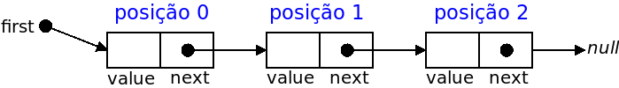

[ED236] Métodos para Listas Ligadas Simples
Neste problema deverá apenas submeter uma classe SinglyLinkedList<T> (e não um programa completo).
[PROBLEMAS PARA DOWNLOAD]
Para precaver uma possível intermitência na ligação de internet, podem e devem fazer download de todos os problemas em:
https://mooshak.dcc.fc.up.pt/~edados/teste_parte1/NUM_MECANOGRAFICO.zip (onde NUM_MECANOGRAFICO deve ser substituido pelo vosso número mecanográfico)
Código Base
Use como base a classe SinglyLinkedList<T> (ver código | download de Node.Java e SinglyLinkedList.Java), que representa uma lista ligada simples e tem disponíveis métodos para adicionar ou remover um elemento no início ou no final, devolver o tamanho, saber se a lista está vazia ou retornar representação em string para escrita (tal como dado nas aulas).
Métodos a Implementar
Deve acrescentar à classe dada os seguintes métodos (não modificando nenhum dos métodos já existentes no código base):
- public SinglyLinkedList<T> cut(int a, int b) (40% da cotação)
Deve devolver uma nova lista que é uma cópia da lista original, mas apenas dos elementos entre as posições a e b (inclusive), ou seja, todo os elementos no intervalo [a,b]. Por exemplo, se list for {2,4,6,8,10}, uma chamada a list.cut(2,3) deve devolver uma nova lista com conteúdo {6,8}, e uma chamada a list.cut(0,2) deve devolver uma nova lista com conteúdo {2,4,6}. A lista inicial não deve ser modificada. Assuma que as posições começam em zero. É também garantido que nos testes feitos ao seu método as posições são válidas, ou seja, 0≤a≤b≤tamanho_da_lista-1.
- public void shift(int k) (60% da cotação)
Deve "rodar" a lista k elementos para a direita (rodar um elemento é retirar o último e acrescentá-lo no início). Por exemplo, se list for {'a','b','c','d','e'}, uma chamada a list.shift(2) deve fazer com que list fique a ser {'d','e','a','b','c'}, e uma chamada a list.shift(4) deve fazer com que list fique a ser {'b','c','d','e','a',}. É garantido que nos testes feitos ao seu método 0≤k≤tamanho_da_lista-1 (se for zero, a lista deve ficar igual).
Notas
- Pode submeter código com apenas um dos métodos implementados (para obter pontuação parcial).
- Em todos os casos de teste as listas têm tamanho máximo de 100 elementos, com a excepção do último caso de teste do método shift (valendo 20% da cotação), onde a lista pode ter 50 mil elementos, pelo que nesse caso a sua solução não poderá ser quadrática (ou pior) no número de elementos da lista original para passar no tempo limite.
- Pode implementar métodos auxiliares, se quiser.
- Para testar na sua máquina deve criar uma lista (pode criar no código ou ler a partir de um input) e chamar o método correspondente.
Exemplos de Input/Output para o método cut
| Lista inicial |
Chamada |
O que deve ser devolvido |
| list = {2,4,6,8,10} |
list.cut(2,3) |
new_list = {6,8} |
| list = {2,4,6,8,10} |
list.cut(0,2) |
new_list = {2,4,6} |
| list = {'a','b','c','d'} |
list.cut(1,1) |
new_list = {'b'} |
| list = {"estruturas","de","dados","e","muito","fixe"} |
list.cut(0,5) |
new_list = {"estruturas","de","dados","e","muito","fixe"} |
| list = {0,1,2,3,4,5,6,7,8} |
list.cut(1,7) |
new_list = {1,2,3,4,5,6,7} |
Exemplos de Input/Output para o método shift
| Lista inicial |
Chamada |
Estado da lista depois da chamada |
| list = {'a','b','c','d','e'} |
list.shift(2) |
list = {'d','e','a','b','c'} |
| list = {'a','b','c','d','e'} |
list.shift(4) |
list = {'b','c','d','e','a'} |
| list = {1,2,42} |
list.shift(0) |
list = {1,2,42} |
| list = {"ola","mundo","cruel"} |
list.shift(1) |
list = {"cruel","ola","mundo"} |
Teste Prático de Estruturas de Dados (CC1007)
8 de Junho de 2020